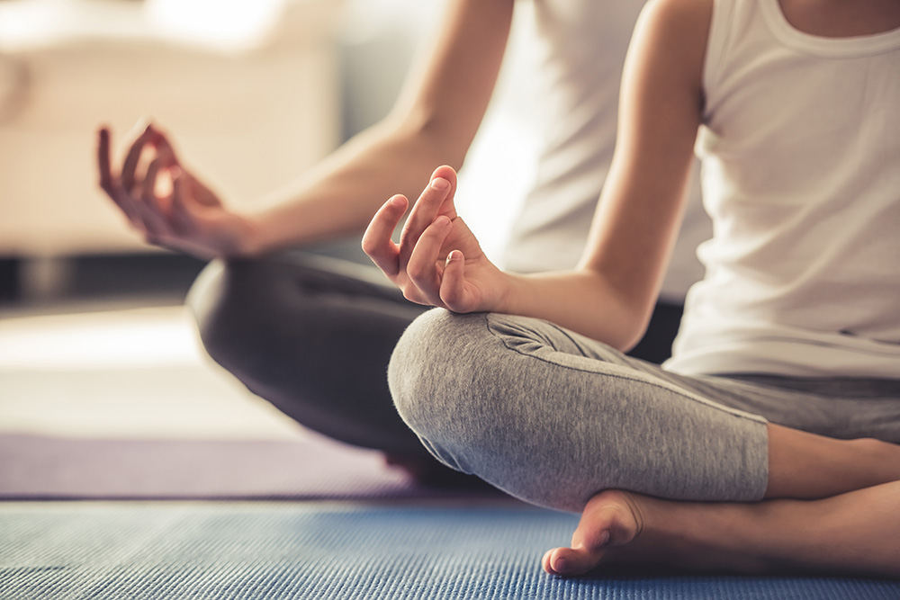
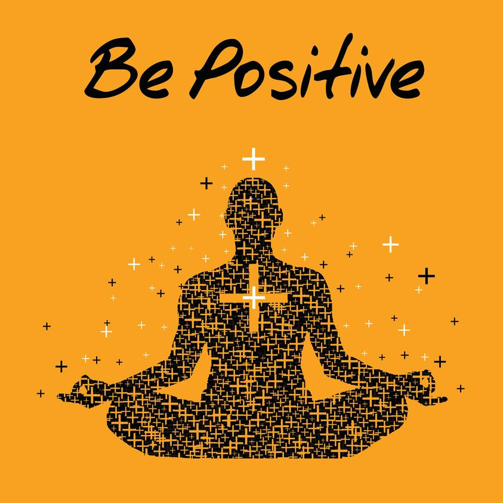

Matters
MattersThe Positive & Negative Side of Yoga
Get Fitness info with Wellness Matters Blog
Yoga may be a method of art that relies on the equalization body system of humans for the event of mind moreover as spirit. someone active it daily becomes the owner of excellent health and acquires internal peace. It will even build your body versatile what is more sturdy. It develops higher practicality of biological process, hormonal, metabolism together with circulatory systems. it's well-known for transferring emotional and mental clarity. It re-balances your body moreover. It helps in sick from several diseases & unwellness while not mistreatment medicines. Besides active totally different position and posture of the body, meditation is additionally enclosed underneath this apply. respiratory techniques that improve your lungs is additionally increased thereunder.
In different corners of the planet, this observe is additionally recognized as living art wherever a private get a chance to find out yoga knowledge alongside techniques during a joyful, thorough & pure manner. Be a beginner or an everyday professional person, all will avail ton of advantages from it. it's brought outstanding changes in several people’s lifestyles. several have practiced full relief from abundant chronic unwellness alongside behavioral changes. Its daily observe have created humans healthier, happier, attentive, and reduced anxiety in several cases. however, each coin has 2 sides. Similarly, there square measure some negative effects of Yoga yet. Let’s 1st take a glance at the positive ones:
The Positive
- improves body flexibility
- It can protect your spine
- increases blood flow in human
- It helps in regulating adrenal glands
- It has conjointly been tried that yoga is incredibly effective in lowering down glucose.
People typically whiney regarding backache, pain in legs, knee and alternative joint of the body will get immediate relief from such follow on daily basis. Your muscles become versatile thanks to the stretching of arms and legs. Thus, you'd most likely notice recommendable changes in your body.
Spinal disks that are thought as a shock is a gift between vertebrae will be herniated in addition as compress nerve. With sensible apply of yoga, you'll be able to master in backend, twists, and forward bends. It keeps disks supple in addition.
Twisting poses and postures helps in increasing human blood flow. The heart must pump a larger quantity of blood that is transported to different components of the body. it's conjointly lower down the guts attack risk in humans.
Cortisol level is lowered by yoga. It boosts up the system and supplies you energy to fight against all ill health and diseases effectively.
The Ngative:
This ancient follow that is related to various techniques and body posture will bring a number of facet effects additionally. If it's not performed with concentration and proper body postures then a private has got to face serious consequences in a variety of body ace, cardiovascular disease, back ace and break down of the system. you wish trained and proficient yoga trainer for such functions.If you are doing not perform the Yoga poses in a very correct method, it will lead to:
-

- Your ankle may get sprained
- Muscle pulls
- Knee pain
- Pain in the wrist
- Vertigo
- Neck aches
Yoga is additionally not suggested for youngsters below the age of sixteen, as a result of their nervous and organ systems area unit still developing. Yoga exercises will have an effect on the natural growth of those systems.
The negative effects of yoga are altered with the regular and dedicated observation of various aasans (poses) underneath skilled oversight. If you are feeling any reasonable discomfort whereas doing Yoga, stop and acquire the assistance of your teacher.
Thank you For Reading.
Upcoming Blog
- 15 Benefits of Yoga That Are Supported by Science.
- Best Yoga & meditation books that you should read in 2022.
- fitness related apps which can help you to stay Upto date.